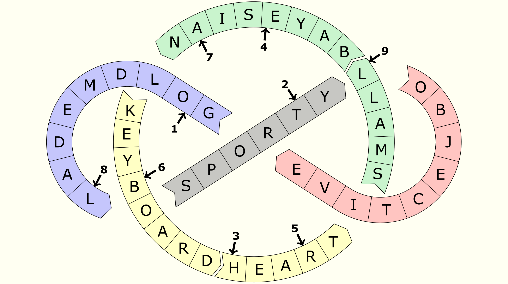
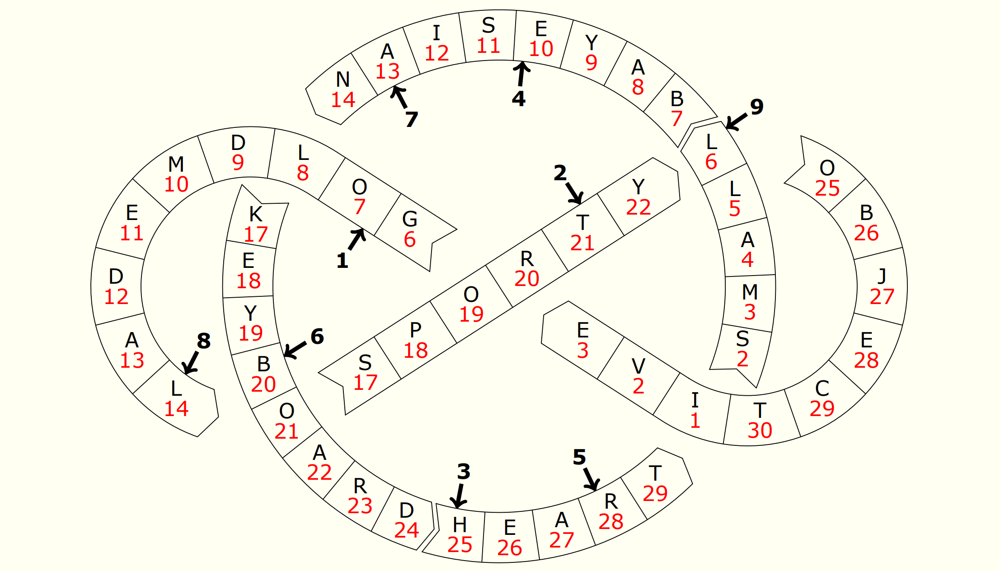

Solution: Animation
Answer: BOOMERANG
Written by Hadyn Tang
This puzzle presents solvers with a blank, colourless IMO logo.
Firstly, the IMO logo has five specific colours: green, blue, red, black and yellow. Additionally, we need to take advantage of a specific feature of the puzzle pages: at the bottom, there are coloured boxes for the answers to be entered into. These boxes are also in those five different colours.
The answers and associated colours are as follows:
| Puzzle | Answer | Colour |
|---|---|---|
| Decomposition | BAYESIAN | Green |
| Sudok-IMO: A Unique Performance | SPORTY | Black |
| Tri-Alphametic | GOLD MEDAL | Blue |
| My Windmill Has a Pencil | HEART | Yellow |
| Circular Reasoning | FINAL | Green |
| Venn-ary Encoding | KEYBOARD | Yellow |
| Koala Kings | OBJECTIVE | Red |
The first step is then to fill the answers into the logo, one letter per cell
so that each answer matches a section of the logo and would be placed in a
section of the correct colour. If we do so, and then read the letters in the
cells pointed to by the arrows, we get the cluephrase OTHER BALL. Teams that
attempted to submit this as the final answer received the message
“You’re on the right track. Keep going!”
Click to show the logo with the answers inserted

What next? Well, we haven’t used the title of the puzzle, Animation, yet,
and additionally our use of the IMO logo has been somewhat superficial
up to this point. One might also be suspicious that the answer
OBJECTIVE
did not actually contribute to giving the phrase OTHER BALL at all.
However, there is a connection between the IMO logo and animation: the logo comes in a GIF version on the main page of the IMO official website which additionally contains two balls moving around the circle and infinity in the direction of the arrows. By tracking how the balls move, and taking the location of the other ball when one of the balls is at the location indicated by an arrow, we can extract the true answer to this puzzle: BOOMERANG.
Unfortunately, the author couldn’t recreate the exact speed and shape of the official logo animation. However, the main page of the puzzle hunt has a GIF which exactly matches the shape of the puzzle and has the balls travelling at constant speed so that when one ball lines up with an indicated cell, the other ball exactly lines up with the other cell we need to take. This might make it easier for solvers to extract the answer. As further hint that this might be relevant, a freeze-frame with one ball visible is shown on the Introductions and Instructions page; this marks the point where the two balls in that GIF are supposed to overlap (and if one has this knowledge it's possible to work out which boxes the two balls are in at the same time without a need to perform some sort of complicated image overlay or guess the paired locations).
(The reason the arrows are offset is to aid teams using the image on the IMO Official website because these represent locations of the first ball that correspond more accurately to the correct location of the other ball. For teams using the image on the hunt website, the offset is not necessary and it can be assumed the ball lines up with the centre of the cell, as previously mentioned.)
Click to show the logo with numbers to indicate paired positions of the two balls

Click to show an overlay of the puzzle and logo GIF

Author's Notes
This puzzle is significantly harder than the other puzzles in this hunt: while approachability for IMO contestants who had never seen a hunt puzzle was a big priority in this hunt, I decided that the final puzzle of this hunt should be a bit harder (and more representative of a puzzle in a larger competitive hunt). Additionally, revisiting the individual puzzle pages and using extra information on the pages in the meta is arguably a common feature of Australian-style puzzle hunts, so this puzzle continues that tradition. (At least it doesn’t make you read through pages of story beforehand!)